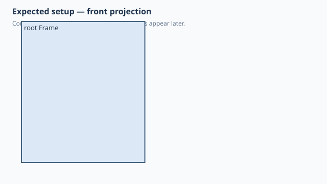

← Qualification / Named native subassembly group
Forge qualification case
NOT RUNQ1 Q2 documented
Named native subassembly group
1. Test setup

Test goal
Verify that group(name) creates a real nested native component rather than a Python-only label.
Pass criteria
Two 10 x 2 x 20 mm panels remain nested under PanelGroup and one 35 x 10 x 40 mm frame remains at root; native BOM inspection must preserve that hierarchy.
2. Implementation under test
Fixture source
"""Qualification: group(name) becomes a real nested native component."""
class Panel:
def build(self):
return Box(10, 2, 20)
class Frame:
def build(self):
return Box(35, 10, 40)
class GroupHierarchy:
def build(self):
left = Panel()
panels = (left + left.copy().move(x=11)).group("PanelGroup")
frame = Frame().move(y=20)
return panels + frame
GroupHierarchy()
Public Forge API used
(left + right).group('PanelGroup'); group + Frame()
Forge model represented by this fixture
Two Panel occurrences share one definition under a named PanelGroup component, while Frame remains a direct root child.
3. Generated SolidCraft relationship
Forge emits component.create(name='PanelGroup'), creates Panel with parent='PanelGroup', copies its occurrence, and creates Frame at the design root.
Show generated relationship / command details
component.create
component.create
solid.box
component.activate
occurrence.copy
occurrence.move
component.create
solid.box
component.activate
occurrence.move3. Results
Native result data was not supplied to this site build. Run the native qualification for measured results.
No source-matched native verification was supplied to this site build. The case sheet and command contract are still shown.
6. Evidence and references
Raw evidence
Show generated files and measurements
Reference models
These comparisons clarify concepts; Forge does not promise API compatibility with them.
- SolidCraft: Native components form a tree; top-level BOM inspection exposes direct children while flat BOM inspection expands subassemblies.
- PythonSCAD: Python-side composition should lower to inspectable native CAD structure rather than remain a transient wrapper.